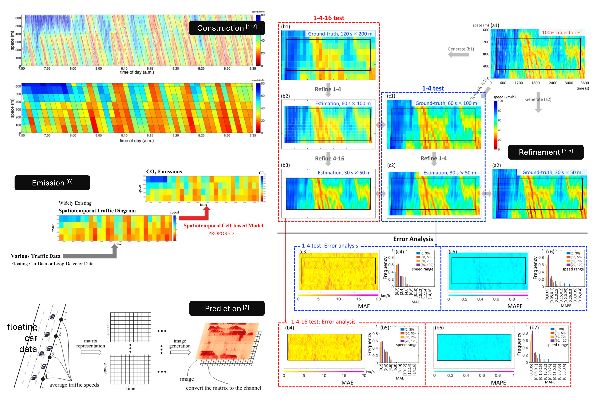

Time-Space Traffic Diagram: Construction, Refinement, and Applications
Overview
A time-space (TS) traffic diagram, in which the x-axis indicates time, the y-axis denotes space, and a diverse array of colors represents different traffic states, is an important traffic analysis and visualization tool (Zheng et al., 2010; Zheng et al., 2011; Lu et al., 2018; Grumert et al., 2018; Wang et al., 2022). From a TS diagram, we can identify traffic bottlenecks (Chen et al., 2004; Ban et al., 2007), understand traffic characteristics (Wan et al., 2020; He et al., 2015), predict travel time (Ma et al., 2017; Zhang et al., 2017), and even estimate traffic emissions (He et al., 2020). Almost all traffic data centers and display platforms, such as California’s Performance Measurement System (PeMS) in the United States, employ TS diagrams to visualize traffic dynamics.
Centering on the construction, refinement, and applications of TS diagrams, we have conducted a series of original studies:
- We innovatively proposed wave-aware methods (seminal[1], advanced[2]) of constructing time-space diagrams, which have been substantively implemented in the well-known I-24 MOTION project in Nashville (Ji et al., 2024; Ji et al., 2026), as well as in the works of global researchers from the UK (Shang et al., 2023), Sweden (Tsanakas et al., 2022), and China (He et al., 2024). Notably, these implementations were carried out completely independently of our own research activities.
- Despite their importance to transportation research and engineering, most existing and newly produced TS diagrams remain too coarse to reveal detailed traffic dynamics because high-fidelity traffic data are difficult to collect. To increase their resolution and enable richer representations of traffic dynamics, we introduced the TS diagram refinement problem for the first time and successively developed a multiple linear regression-based solution[3], a neighborhood-adaptive linear regression solution[4], and a GAN-based solution[5]. TS diagram refinement is a pioneering line of research: it formulated a new transportation problem and has since inspired follow-up studies (Hu et al., 2026; Ji et al., 2025; Liu et al., 2026).
- Existing CO2 emission models are predominantly either microscopic vehicle motion-based models or macroscopic traffic index-based models, leaving a need for a mesoscopic approach that uses easily collected data while capturing traffic dynamics. We proposed a spatiotemporal cell-based model that estimates freeway CO2 emissions directly from prevailing TS diagrams[6]. It opens the door for estimating CO2 emissions from widely available low-fidelity traffic data, since the ST diagram can be constructed by using various traffic flow data, such as loop detector data and floating car data.
- To capture the spatial correlations of network-wide traffic, we proposed the first CNN-based approach to network-wide traffic speed prediction[7]. The approach maps floating-car data onto a road network to construct TS diagrams that capture traffic evolution in both time and space. These diagrams are then fed into a CNN, effectively framing traffic prediction as an image-learning task, a quite innovative perspective at the time.
